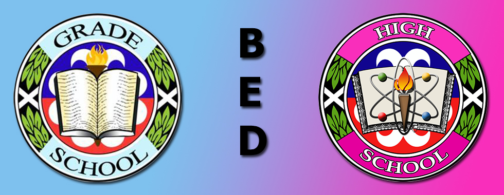

Basic Education Department
About the Office
The Basic Education is responsible for the management of the Grade School and High School.
Its administration of the curriculum, including the support services, human resource development and allocating fiscal resources.
The department oversees the cultural, moral, physical and spiritual upbringing of all student and pupils and supervises the faculty, personnel and academic programs hereof in the pursuance of these goals.
Vision
- Grade School The Grade School of Colegio de San Juan de Letran Calamba envision itself as an accredited department providing an enhanced science curriculum
- Special Science High School The Special Science High School is envisioned to promote world class learning that is globally and locally competitive and responsive to the changing needs of the times especially in Science, Technology and Mathematics.
- Basic Education High School The Basic Education High School is envisioned to promote world-class learning that is globally and locally competitive and responsive to the changing needs of time.
Mission
- Grade School The Grade School of Basic Education High School The Basic Education High School is envisioned to promote world-class learning that is globally and locally competitive and responsive to the changing needs of the times.Colegio de San Juan de Letran Calamba commits itself to provide a solid foundation of basic education with Filipino, Dominican and Christian orientation.
- Special Science High School It is the mission of the Special Science High School to fully develop well-rounded Science, Technology and Mathematics oriented students, nurturing individuals and future leaders with a vision for conscience, excellence and discipline through a world class education grounded on the Filipino, Dominican and Christian orientation.
- Basic Education High School The Basic Education High School is envisioned to promote world-class learning that is globally and locally competitive and responsive to the changing needs of the times.
Qualtiy Objective
- To promote and implement Dominican programs which are quality-focused, industry aligned, and competency based preparing students to be glocally competitive.
- To continually enhance the support services that will effectively and efficiently contribute to the delivery of programs
- To maintain qualified and productive academic administrators, teachers, and support personnel
Senior High School Department

About the Office
Its basic purposes include the implementation of a sound SHS curriculum and provision of activities for student development. The department aims to serve as a vehicle to improve the vital dimensions of student's life. These include physical, mental, emotional, socio-cultural, and spiritual dimensions. Likewise, the department aims for human resource development by sending faculty and personnel to seminars and training. It also allocates financial resources for its operation.
VISION
The Senior High School Department envisions itself to be the center of holistic formation in the region that responds to the needs of the society, through an education that is Filipino, Dominican, and Christian in orientation.
MISSION
The Senior High School Department is committed to the formation of students who are equipped for employment, entrepreneurship, or higher education The Department strives to produce graduates who are academically competent and socially responsible.
QUALITY OBJECTIVES
- To develop students creative and critical thinking, effective communication, and information and technology skills that are needed for higher education.
- To provide students with practical knowledge and innovative skills through sound curriculum and strong , academic-industry linkage, whereby students will have relevant exposure and actual experience in their chosen track
- To enhance the competence of the administrators, faculty members, and staff for them to effectively contribute to the delkiery of the SHS program.
- To cultivate a sense of 'corporate social responsibility among the students, faculty, administrators, and staff through community and extension service.
Graduate School Department

About the Office
About the Office
Graduate School has established postgraduate programs that aim to groom a new breed of industry leaders capable of excelling in a rapidly changing and dynamic world. Our curriculum is tailored to meet the challenges of an increasingly complex global market. To deliver this, our faculty has been handpicked to advance knowledge in teaching and research. Aside from recruiting some of the best academic instructors, Letran Calamba also taps successful business professionals for their specific expertise and skills.
VISION
The leader and center of excellence in graduate studies in Region IV-A
MISSION
To provide professionals in the region with advance, innovative, needs-based, and responsible business and management education for continuous improvement, lifelong learning, and integral human development.
Quality Objective
- To provide the students with quality focused, industry-aligned, competency-based, and glocally competitive graduate programs that are anchored on the core principles of conscience, discipline, and excellence.
- To deliver graduate curricular programs that promote the Colegio as one of the nationally and internationally-recognized educational institutions.
- To continually develop professionals in the fields of business, management, and education through training and development and other relevant capability-building services.
- To continually prepare and improve the administrators, faculty members, and staff to deliver quality instruction and support services that will effectively contribute to the delivery of graduate programs.